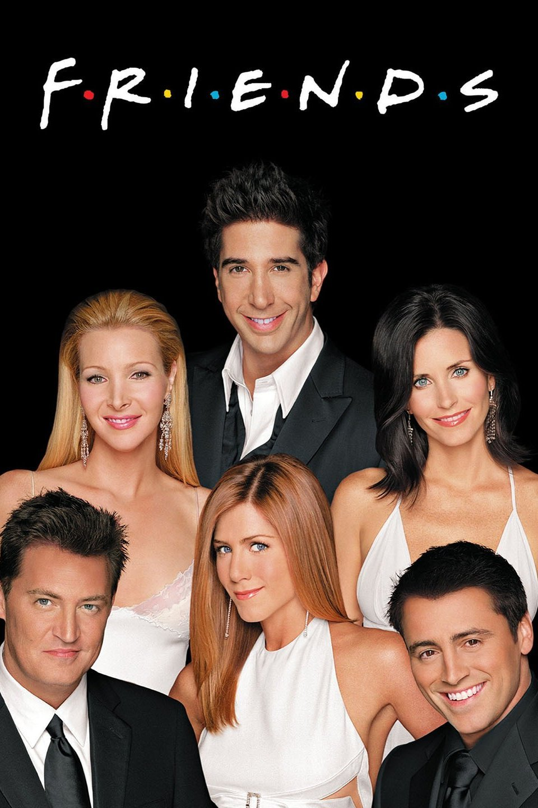
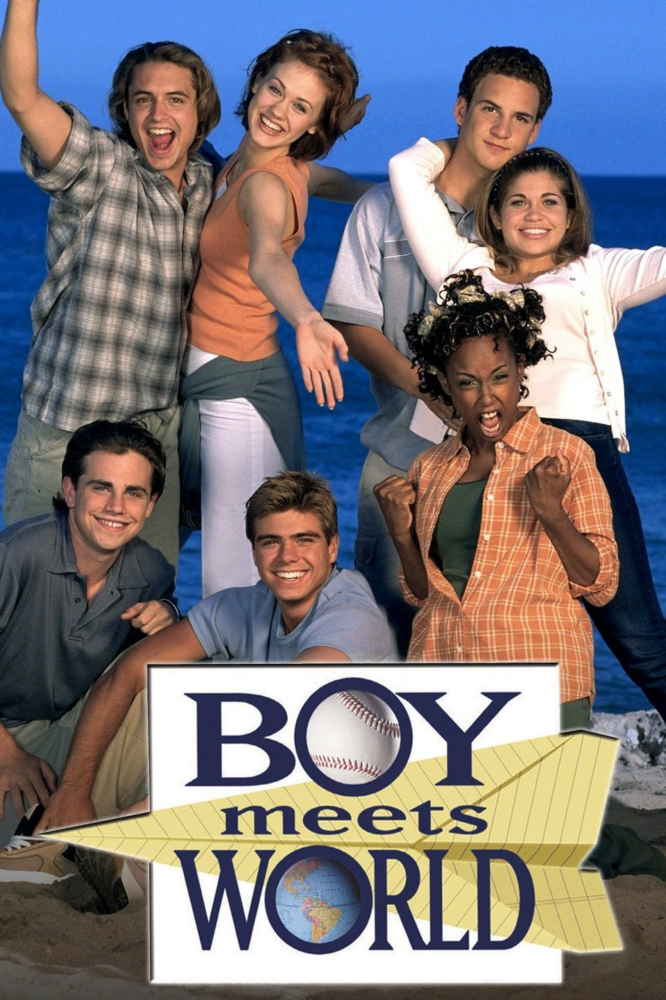
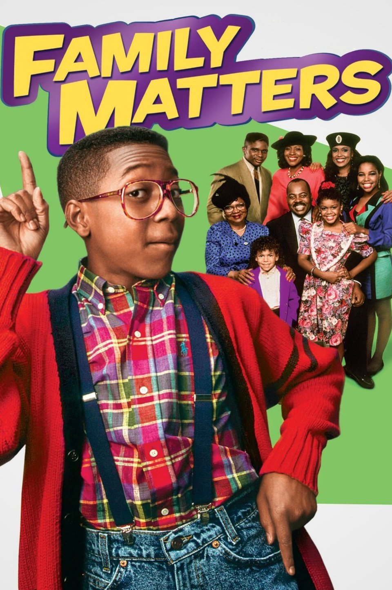
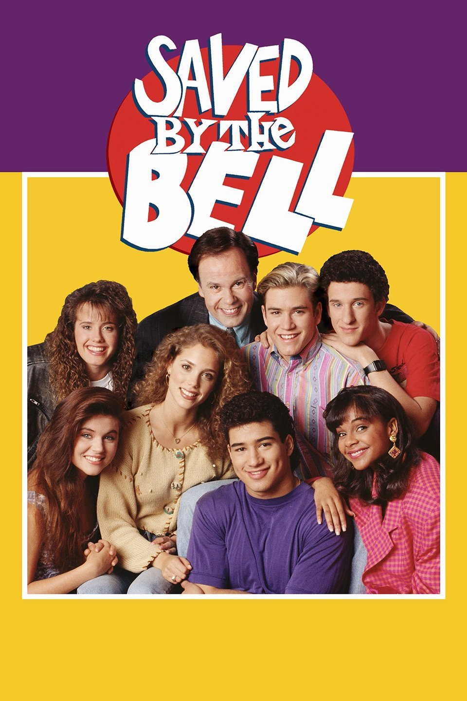

Are you obssessed with the 90's? Or maybe, not really obssessed,
but still like it?
Well either way, check out some popular 90's sitcoms below.
Friends

About Friends
The Fresh Prince of Bel-Air
About The Fresh Prince of Bel-Air
Boy Meets World

About Boy Meets World
Family Matters

About Family Matters
Saved By the Bell

About Saved By the Bell